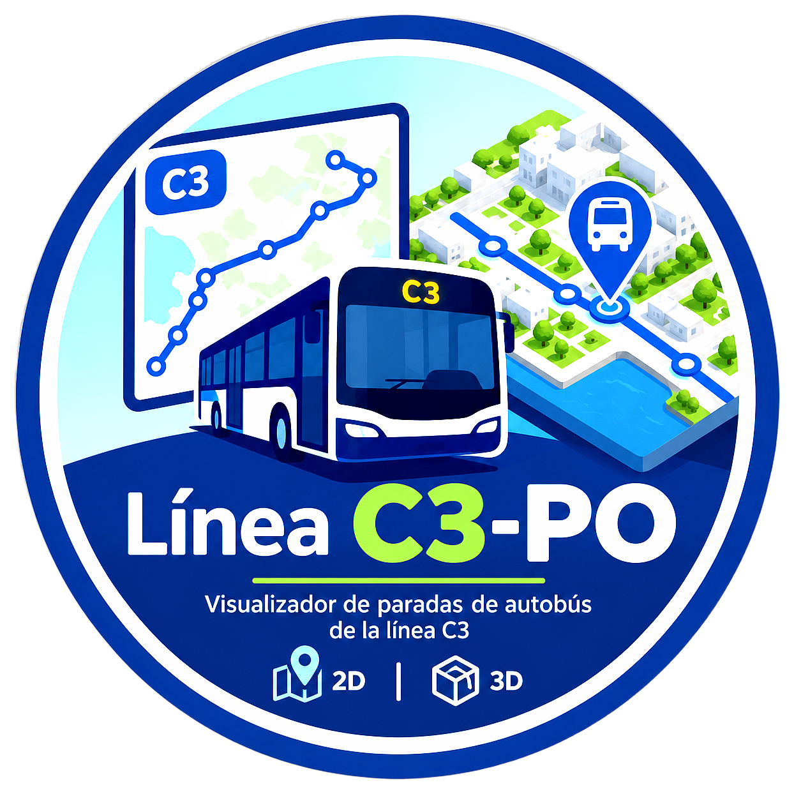

Arrastra para girar · botón derecho para mover · rueda para acercar · pulsa una parada

Vitrasa · Vigo
Línea C3-PO
Bouzas — Chapela
--:--hora en el mapa
Cómo leerlo
El amarillo es la C3d, por García Barbón. El naranja es la C3i, por Travesía de Vigo.
Con «Ahora», los autobuses con un anillo que late están en vivo: su posición es una estimación a partir de las llegadas en tiempo real que da el Concello, y se actualiza cada 20 segundos. Los contornos discontinuos son salidas del horario sin bus en vivo asociado.
Si mueves el reloj, los autobuses vuelven a colocarse según el horario teórico.
En 3D, cada autobús lleva un haz de luz encima y mira hacia donde circula. Las paradas son los discos sobre la calzada: púlsalos para ver sus horas y la llegada real.
Cuando no hay servicio, la línea se apaga. Al abrir una parada se consulta la llegada real.